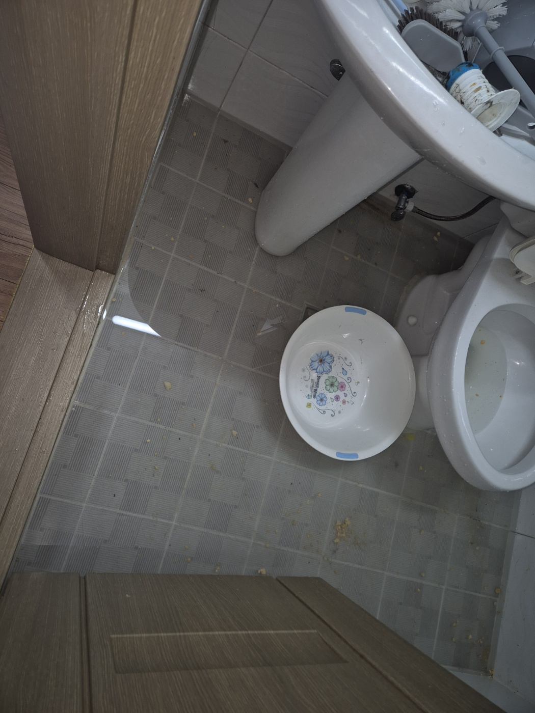
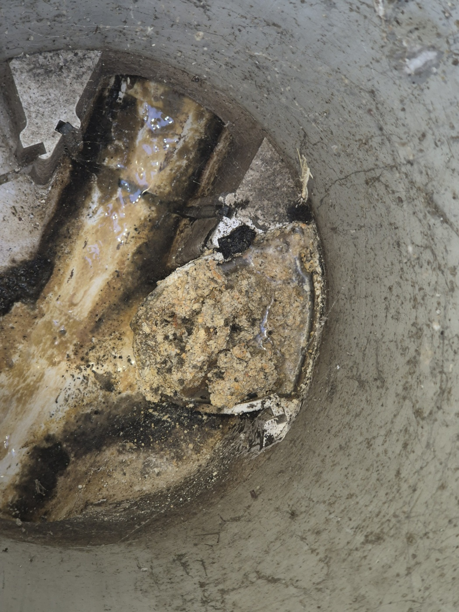
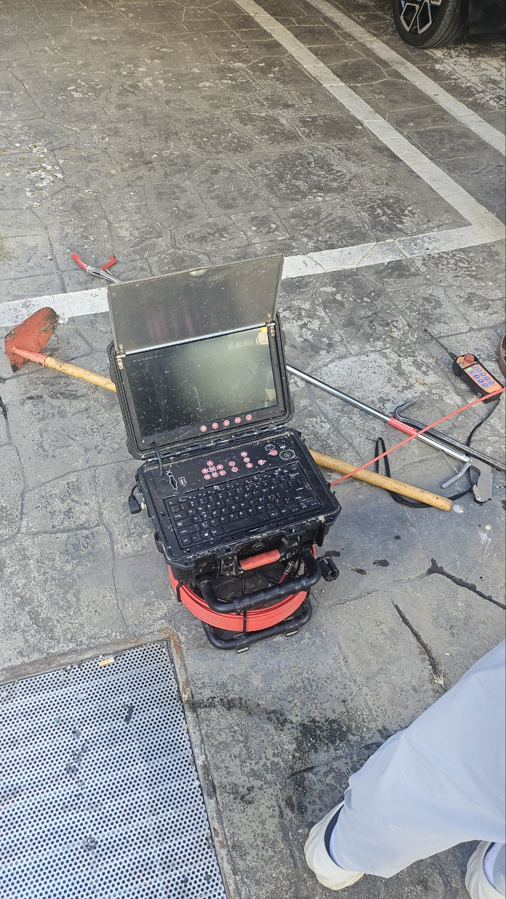
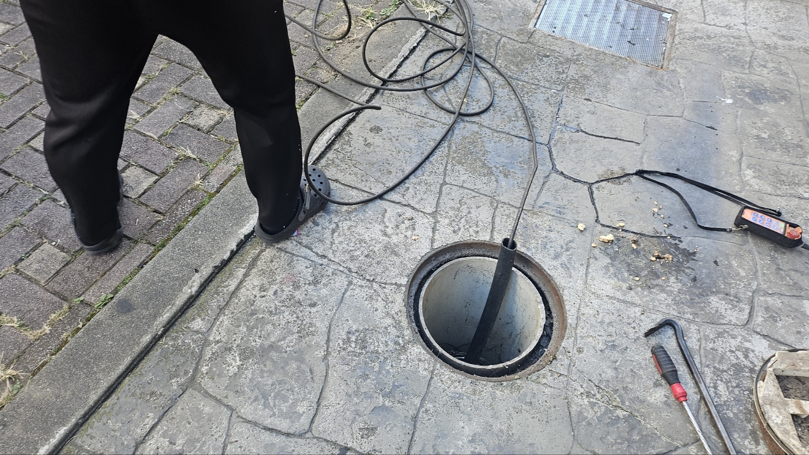
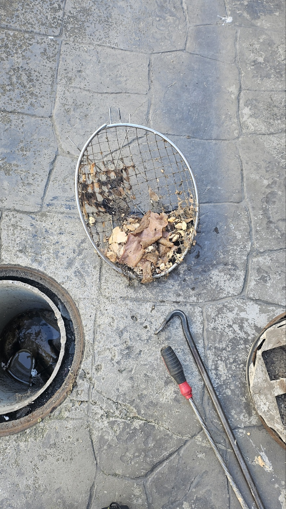
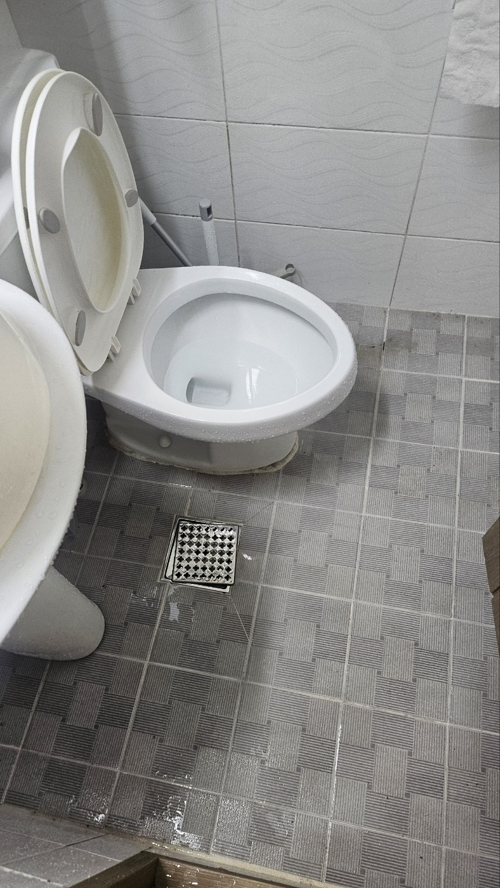

안녕하세요.. 고고고 설비입니다.. 이번에는 평택 용이동 하수구역류 현장을 소개해드릴게요. 평택시 용이동에 있는 원룸 건물에서 1층 두 세대의 하수구가 역류한다는 연락을 받고 출동했는데, 화장실 안이 아니라 건물 밖 메인 맨홀 쪽에 원인이 있었어요. 원룸 1층 하수구역류를 맨홀과 내시경으로 확인해서 해결한 과정을 정리해 봤습니다.
먼저 1층 원룸 화장실 안을 확인했어요. 바닥 배수구 쪽에서 하수가 올라오는 문제였는데, 변기나 세면대 쪽에는 눈에 띄는 이물질이 없었습니다. 이렇게 한 군데가 아니라 여러 세대가 같이 역류하는 경우에는 건물 전체 하수가 모이는 메인 배관을 먼저 의심해야 해요.

그래서 건물 밖으로 나가 메인 맨홀 뚜껑을 열어봤어요. 맨홀 안쪽 벽면에는 오물과 기름때가 두껍게 굳어 있었고, 하수가 시원하게 흘러가기 어려워 보이는 상태였습니다. 화장실 바닥으로 하수가 올라온 이유가 바로 여기에 있었던 거죠.

맨홀 옆 주차장 바닥에 내시경 장비를 펼쳤어요. 모니터와 카메라, 길게 감긴 케이블을 준비해 두고 맨홀 안쪽 배관 상태를 직접 확인할 준비를 했습니다. 눈으로 보지 않고 감으로만 뚫으면 재발할 수 있어서 저희는 내시경 확인을 꼭 하는 편이에요.

맨홀 안쪽으로 케이블을 천천히 밀어 넣으면서 배관 상태를 살펴봤어요. 맨홀 바닥에서부터 배관이 이어지는 방향을 따라 어디가 좁아졌는지 확인하는 과정입니다.

맨홀 입구 쪽에는 낙엽과 나뭇조각 같은 이물질이 걸려 있었어요. 그물 바구니로 하나씩 건져내 보니 생각보다 양이 많았습니다. 건물 밖 맨홀은 빗물과 함께 흘러 들어온 낙엽이나 쓰레기가 쌓이기 쉬운 곳이라 이런 이물질이 하수 흐름을 막는 경우가 종종 있어요.

맨홀 안쪽 배관 입구 쪽에 이물질이 걸려 있는 모습을 영상으로도 담았어요. 맨홀을 열어 직접 내려다보면 어디가 막혔는지 한눈에 확인할 수 있습니다.
맨홀 쪽 이물질을 정리하고 메인 배관은 고압세척으로 마무리한 뒤 다시 화장실로 돌아와서 상태를 확인했어요. 바닥 배수구에서 하수가 올라오던 증상이 해결되어 깨끗하게 마무리되었습니다.

건물 하수는 위층에서 아래로 흘러 가장 낮은 곳에 있는 메인 배관과 맨홀로 모여요. 이 메인 배관이나 맨홀이 막히면 하수가 나갈 곳을 잃고 가장 낮은 곳, 즉 1층 화장실이나 배수구로 올라오게 됩니다. 이번 용이동 원룸 하수구역류가 1층 두 세대에서 같이 발생한 것도 같은 이유였어요. 그래서 역류가 생기면 화장실 안만 보지 않고 건물 밖 맨홀까지 확인하는 게 중요합니다.
첫째, 물을 더 쓰지 마세요. 샤워나 세탁기, 설거지 물이 계속 내려가면 역류가 더 심해집니다. 둘째, 같은 건물 다른 세대에서도 같은 증상이 있는지 확인해 주세요. 여러 곳이 같이 그렇다면 메인 배관 문제일 가능성이 높아요. 셋째, 바닥에 올라온 물은 가능하면 빨리 닦아내고 전화로 상황을 알려주세요. 언제부터, 어느 곳에서 올라오는지 알려주시면 출동할 때 준비를 더 정확하게 할 수 있습니다.
Q. 화장실에서만 문제인데 왜 건물 밖 맨홀까지 확인하나요? A. 한 세대만 막힌 게 아니라 여러 세대에서 올라온다면 원인이 건물 밖 메인 배관이나 맨홀에 있는 경우가 많아요. 화장실만 작업하면 얼마 지나지 않아 다시 역류할 수 있어서 원인 위치를 먼저 찾습니다.
Q. 작업 비용은 어떻게 정해지나요? A. 막힌 위치와 작업 난이도, 고압세척 필요 여부에 따라 달라져요. 현장을 확인한 뒤에 예상 비용을 먼저 안내드리고, 동의해 주신 뒤에만 작업을 진행합니다.
Q. 용이동 말고 평택 다른 동네도 출동하나요? A. 평택 전 지역은 물론 안성, 천안, 오산, 화성까지 출동하고 있어요.
고고고 설비는 주택, 아파트, 원룸, 상가, 공장의 생활 하수 오수 배관을 관리해 주는 업체입니다. 고고고 설비에 전화 주시면 친절상담 정확한 진단 확실한 해결로 보답해 드리겠습니다!!